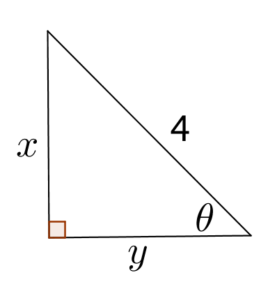

- (a)
- \(\cos ^{-1} \bigl ( \sin (\pi /2) \bigr )\)
- (b)
- \(\tan \bigl ( \sin ^{-1}(x/4) \bigr )\) Let \(\theta = \sin ^{-1}(x/4)\), then \(\sin (\theta ) = x/4\). We can then draw the corresponding right triangle:Calling the adjacent side \(y\), by the Pythagorean Theorem we obtain

\[4^2 = x^2 + y^2 \implies y = \sqrt {16-x^2}\]Remark: Since \(\theta \) is in the range of \(\sin ^{-1}\), it follows that \(-\pi /2 \le \theta \le \pi /2\). On the other hand, the expression \( \tan \left ( \sin ^{-1} \left (x/4 \right ) \right )\) is defined only for \(-4<x<4\) (Note: \(\sin ^{-1} \left (4/4 \right )=\frac {\pi }{2}\) and \(\tan \) is not defined at \(\frac {\pi }{2}\); similarly for \(x=-4\).)Therefore, \(-\pi /2 < \theta < \pi /2\), which implies that \(\cos (\theta )=y/4> 0\). Therefore, \(y> 0\).
Then
\begin{align*} \tan \left ( \sin ^{-1} \left (x/4 \right ) \right ) &= \tan ( \theta ), \\ &= \frac {x}{y}, \\ &= \frac {x}{\sqrt {16-x^2}}. \end{align*}Note: \(\tan \left (\theta \right )\) has the same sign as \(x\), since \(y>0\).